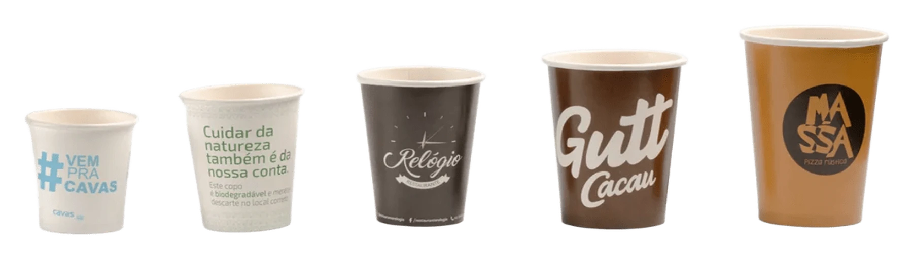

Impressão em até 4 cores, papel de fonte certificada e a mesma qualidade dos nossos copos descartáveis — só que com sua logo em destaque em cada atendimento.
Nossa equipe adapta sua logo ao molde do copo sem custo extra, com prova aprovada antes da produção.
Produção sob demanda a partir de lotes pequenos, ideal para cafeterias e redes em expansão.
Papel reciclável, resistência a líquidos quentes e frios, e o compromisso de sustentabilidade Trompack.
Precisa de uma quantidade ou tamanho fora da lista? Fale com a gente.
De cafeteria de bairro a rede de pizzaria: cada copo abaixo é um pedido real, com arte adaptada por nós e aprovada pelo cliente antes de rodar.

Certificação FSC. O papel do seu copo personalizado vem de florestas de manejo responsável, com cadeia de custódia certificada — a sustentabilidade acompanha a sua marca.